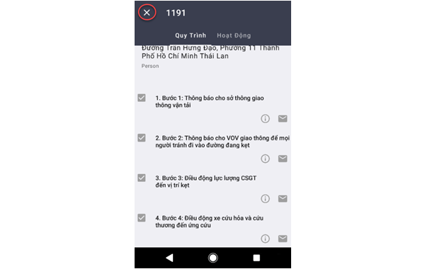

Phần mềm trung tâm chỉ huy dành cho lực lượng ngoài hiện trường trên thiết bị di động - VBD T4CH.MOB
Phần mềm trung tâm chỉ huy dành cho lực lượng ngoài hiện trường trên thiết bị di động VBD T4CH.MOB (VBD T4CH.MOB) là ứng dụng cung cấp thông tin theo thời gian thực về vị trí, tuyến đường, môi trường xung quanh, tình trạng giao thông v.v. cho các thiết bị di động. Phần mềm được sử dụng bởi các lực lượng tại chỗ để trao đổi thông tin, nhận lệnh từ hệ thống thông tin chỉ huy thông qua mạng truyền thông không dây.
VBD T4CH.MOB tích hợp các công nghệ hiện đại như hệ thống định vị toàn cầu (GPS), hệ thống thông Tin địa lý (GIS), công nghệ nhận dạng khuôn mặt, công nghệ truyền hình ảnh, video thời gian thực v.v. nhờ đó có thể cung cấp một giải pháp tổng thể cho tất cả tình huống khấn cấp công cộng của các cơ quan chính phủ.
Sản phẩm VBD T4CH.MOB nâng cao khả năng chỉ huy tập trung các lực lượng tại hiện trường, giúp ứng phó kịp thời, và phối hợp nhịp nhàng giữa các cơ quan liên quan. Điều này sẽ cải thiện tính hiệu quả trong việc tiếp nhận, xử lý tình huống khẩn cấp, giám sát và bảo đảm tuyệt mật, lưu giữ các hồ sơ an toàn của tất cả hoạt động.
Ứng dụng VBD T4CH.MOB là dạng cấu trúc bao gồm 5 môđun chức năng:
Tất cả các môđun chức năng được thực thi trên các máy chủ trung tâm. Người dùng sử dụng thông qua ứng dụng được kết nối đến máy chủ bằng giao thức bảo mật.
Các chức năng của VBD T4CH.MOB người dùng được truy cập đến còn phụ thuộc vào quyền hạn của người dùng. Quản trị của hệ thống được phép chỉ định hoặc điều chỉnh quyền truy cập từ máy chủ trung tâm.
Các môđun chức năng của hệ thống VBD T4CH.MOB có tích hợp liền mạch với GIS. Việc định vị cơ bản và xem bản đồ, các chức năng truy vấn được cung cấp từ hệ thống Máy chủ GIS tập trung nhằm giúp người dùng xác định vị trí sự cố, và giúp những cơ quan điều phối xác định vị trí các tài nguyên ứng phó khẩn cấp.
VBD T4CH.MOB cho phép các thành viên của các lực lượng tại chỗ liên lạc với nhau và liên lạc với Trung tâm thông tin chỉ huy qua các công cụ nhắn tin, gởi hình ảnh hiện trường, gọi điện thoại, gọi điện thoại truyền hình…, nhờ đó cung cấp cho tất cả các bên cái nhìn tổng quát và cập nhật nhất về sự cố đang diễn ra.
Lớp bản đồ thể hiện các dữ liệu về thông tin địa lý (không gian, thuộc tính..), là lớp nền để lưu trữ CSDL của hệ thống. Ứng dụng VBD T4CH.MOB cung cấp tính năng điều khiển màn hình bản đồ, bao gồm phóng to, thu nhỏ, chọn màn hình, thay đổi màn hình, v.v
VBD T4CH.MOB sử dụng một chiến lược chia sẻ thông tin có hệ thống, cả trong thu thập , xử lý, giao tiếp, lưu trữ, hiển thị, và phân tích. Hỗ trợ truy xuất thông tin liên quan đến không gian hoặc địa điểm, bao gồm địa chỉ, vật thể, trụ chữa cháy và những thứ nguy hiểm… một cách dễ dàng. Qua đó làm tăng hiệu quả công việc của các đơn vị ứng phó ngoài hiện trường và các phòng ban có liên góp phần cải thiện việc ra quyết định cho người giám sát, điều phối viên và các đơn vị phản ứng.
hu thập thông tin các sự cố ngoài hiện trường bằng phương pháp thủ công vừa tốn thời gian, công sức, vừa dễ bị nhầm lẫn, sai sót... Ứng dụng VBD T4CH.MOB cung cấp các tính năng ưu việt để giải quyết tất cả những bất cập đó. Thông qua thiết bị di động, người dùng có thể thu thập thông tin về sự cố cần xử lý, đồng thời có thể chuyển dữ liệu từ hiện trường về Trung Tâm Thông Tin Chỉ Huy một cách nhanh gọn.
ng dụng VBD T4CH.MOB có thể thu thập thông tin thông qua các biểu mẫu nhập liệu, định vị chính xác vị trí xảy ra sự cố, đưa hình ảnh thực tế ngoài hiện trường vào hệ thống để các đơn vị Giám sát, Điều phối nắm bắt một cách trực quan, từ đó đưa ra những phương án xử lý kịp thời.
Ứng dụng VBD T4CH.MOB còn cung cấp tính năng Bản đồ ngoại tuyến cho phép người dùng tải bản đồ một khu vực nhất định về thiết bị để biên tập dữ liệu trong trường hợp thiết bị không có kết nối mạng Wifi/ 3G/4G/5G. Khi có kết nối tới mạng Wifi/3G/4G/5G, người dùng sẽ sử dụng chức năng Đăng tải dữ liệu để đồng bộ dữ liệu lên hệ thống.
Mô-đun định vị thông minh của hệ thống VBD T4CH.MOB có thể nhanh chóng chuyển đổi địa chỉ văn bản, số điện thoại, cột mốc đường, giao lộ sang tọa độ địa lý và hiển thị vị trí trên bản đồ tham chiếu trong thời gian thực.
Ứng dụng VBD T4CH.MOB hỗ trợ đầy đủ các chức năng để tiếp nhận và xử lý các phương án trong tình huống khẩn cấp được điều phối từ Hệ thống Trung Tâm Thông Tin Chỉ Huy. Ứng dụng sẽ tự động tiếp nhận và phối hợp các tình huống khẩn cấp thông qua một danh sách sự cố bao gồm Quy trình giải quyết sự cố được thiết lập sẵn hoặc tùy chỉnh để phù hợp với thực tế và các Hoạt động thể hiện các sự kiện liên quan đến sự cố được đề xuất để các đơn vị ứng phó và hành động. Với tính năng này giúp nhóm ứng phó tiết kiệm thời gian, khiến họ chú ý nhiều hơn đối với các tình huống khẩn cấp phức tạp và bất ngờ.
Ứng dụng VBD T4CH.MOB đặc cách hỗ trợ trong việc tìm kiếm tuyến đường ngắn nhất/nhanh nhất trên các mạng lưới đường bộ chi tiết để giảm thiểu sự chậm trễ của các đơn vị ứng phó đến nơi xảy ra sự cố. Việc định tuyến và danh sách chặng đường luôn có sẵn cho các thiết bị điều hướng phương tiện hoặc cho gửi tin nhắn đến thiết bị có khả năng nhận hướng dẫn văn bản.
Với việc tích hợp công nghệ GPS trong ứng dụng VBD T4CH.MOB, cho phép các giám sát và điều phối có thể theo dõi các vị trí thực của các xe cảnh sát hoặc cơ quan chính phủ, xe cứu thương và xe chữa cháy đang xử lí dữ liệu từ các tín hiệu GPS gửi tới. Các nhóm giám sát , điều phối và thành viên VIP có thể quan sát việc ứng phó khẩn cấp từ hệ thống Trung Tâm Thông Tin Chỉ Huy để chắc rằng mọi thứ điều thực hiện đúng kịch bản.
Ứng dụng VBD T4CH.MOB hỗ trợ cổng SMS để bất kì thông tin điều phối sẵn sàng gửi đến các đơn vị ứng phó qua dịch vụ tích hợp SMS.
Ứng dụng VBD T4CH.MOB cũng được tích hợp với hệ thống CCTV. Các giám sát viên và điều phối viên có thể tìm thấy các thiết bị máy quay CCTV gần nhất tại nơi xảy ra sự cố bằng cách thực hiện truy vấn địa lý trực tiếp trên bản đồ và có thể chuyển đổi qua lại các thiết bị quay để truy xuất những hình ảnh thực. Điều này giúp các giám sát và điều phối có được thông tin trực quan về toàn cảnh sự cố và môi trường xung quanh. Từ đó thiết lập nhữg quyết định đúng đắn với phản hồi thực tế.
Ứng dụng sử dụng hệ thống nhận dạng gương mặt để phát hiện, nhận dạng khuôn mặt từ một hình ảnh hoặc camera nhận dạng để đối chiếu so sánh, đưa ra các cảnh báo khi phát hiện sự trùng khớp giữa khuôn mặt phát hiện được với cơ sở dữ liệu về khuôn mặt đã được lưu trong cơ sở dữ liệu.
Các thủ tục xử lí tình huống khẩn cấp được định nghĩa và quản lí bằng cách sử dụng công nghệ quy trình luồng công việc trên hệ thống Trung Tâm Thông Tin Chỉ Huy và được cấu hình xuống ứng dụng VBD T4CH.MOB giúp người dùng có thể linh hoạt hơn để thích nghi hệ thống làm việc theo cơ cầu tổ chức và quản lý sự cố trên khuôn khổ văn hóa và pháp lí.
